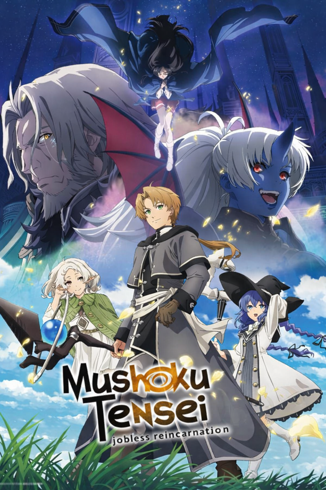
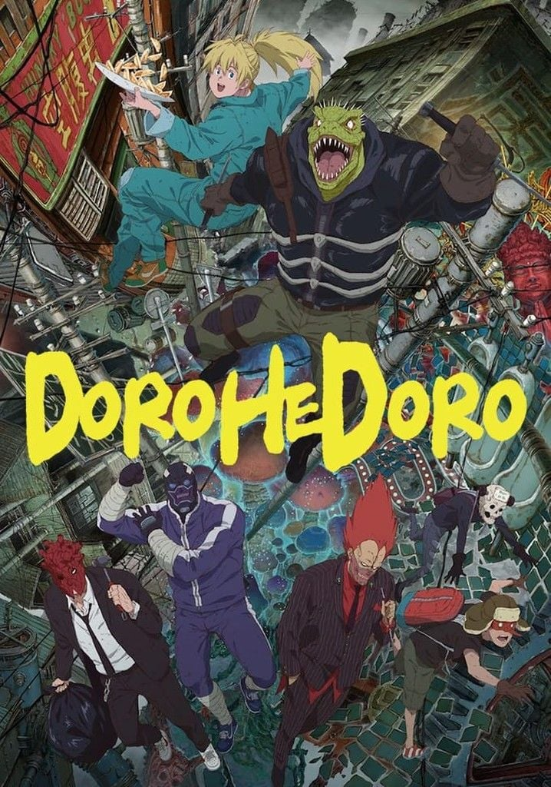
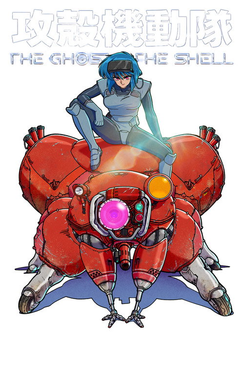

RECENTE★ 0.00
Anime em exibição
Tomb Raider
TEMPORADA DE VERÃO 2026 • STUDIO EEK
Tomb Raider
King
Depois de ser traído e deixado para morrer, Joo-Heon retorna ao passado. Com o conhecimento do futuro, ele inicia uma corrida para conquistar as relíquias mais poderosas.
12Episódios
0.00Nota média
0Votos
0Membros
RECÉM-CADASTRADOS
Ver todos os animes →Últimos animes adicionados

3° TEMPORADA CONFIRMADA★ 0.00
ÚLTIMO ADICIONADO★ 0.00ANIME • 1ª TEMPORADA
The Ghost in the Shell
Ação • Cyberpunk • Ficção científica
0 de 2 episódios disponíveis
AGENDA NAKAMA
Próximos lançamentos
Atualizado em 17 jul. 2026Abrir calendário →
EM EXIBIÇÃO
Próximos episódios
Mushoku Tensei3ª temporada • Episódio 4Domingo • 24:00 no Japão
→
The Ghost in the Shell1ª temporada • Episódio 3Terça-feira • Prime Video
→
Tomb Raider King1ª temporada • Episódio 3Quarta-feira • exibição semanal
→
ANÚNCIOS
Próximas temporadas
3°TEMPORADA
DorohedoroTemporada confirmadaEm produção • data ainda não anunciada
→
◷
Assim que uma data oficial for anunciada, ela aparecerá nesta agenda.